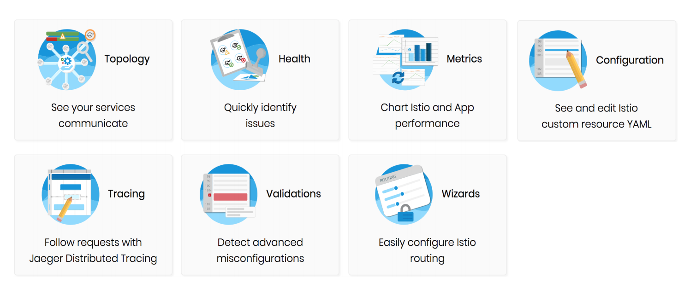
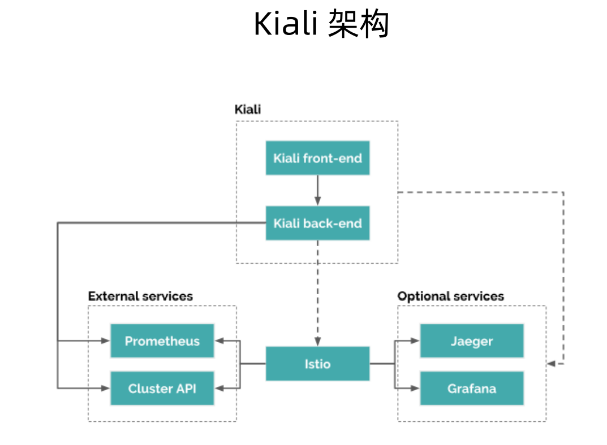
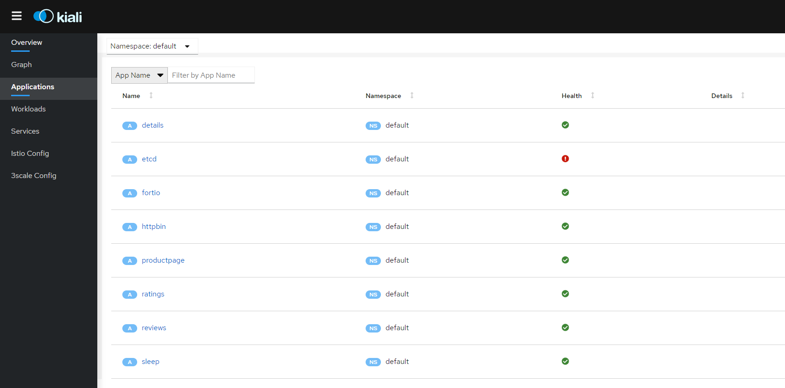
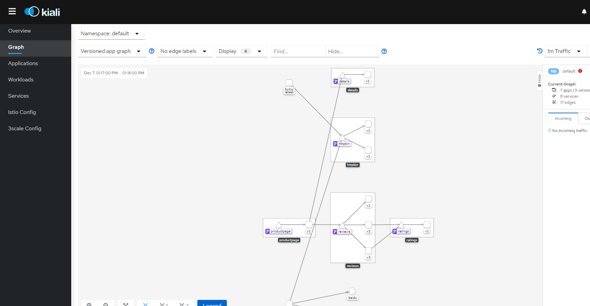
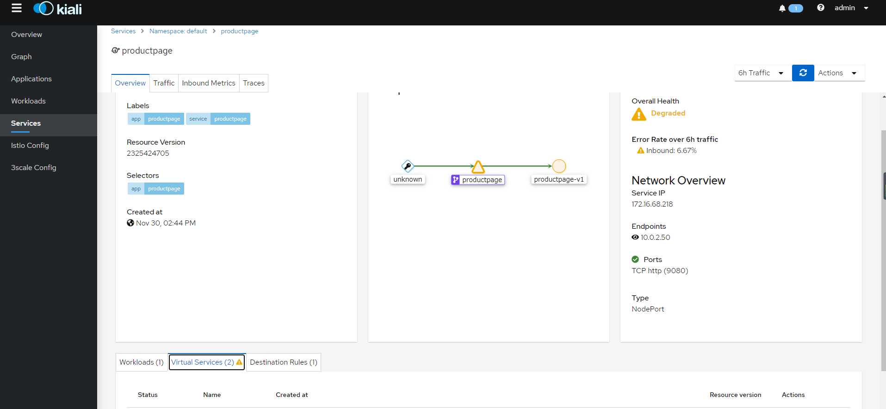
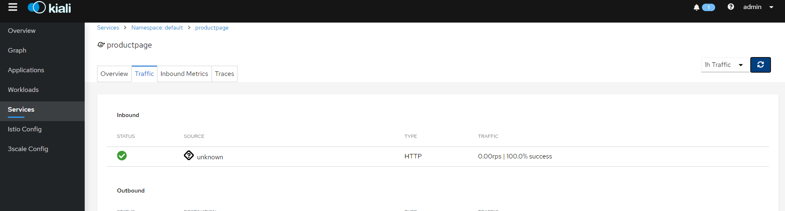
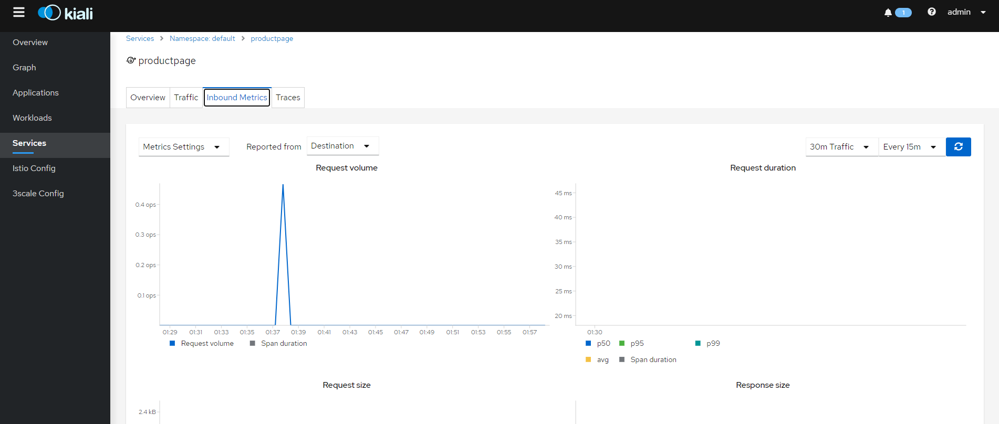
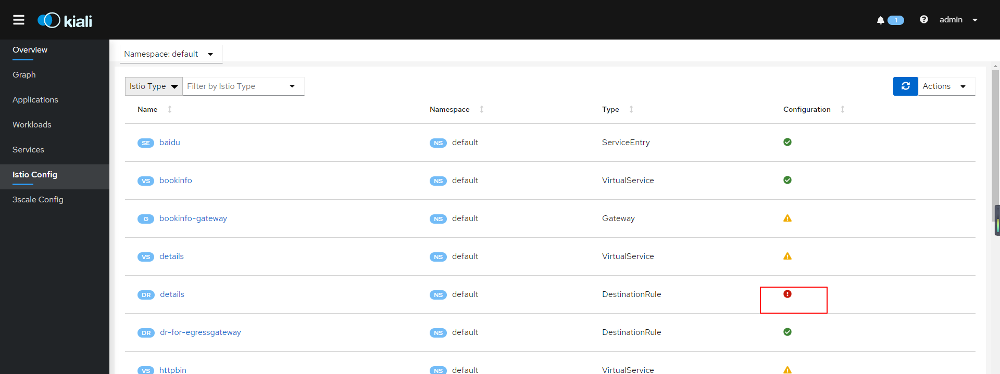
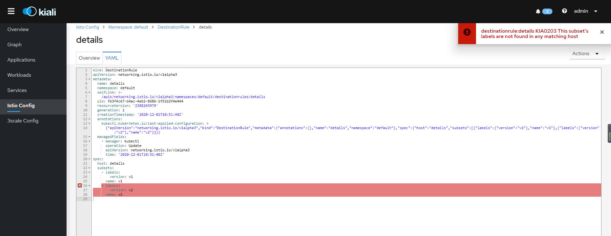
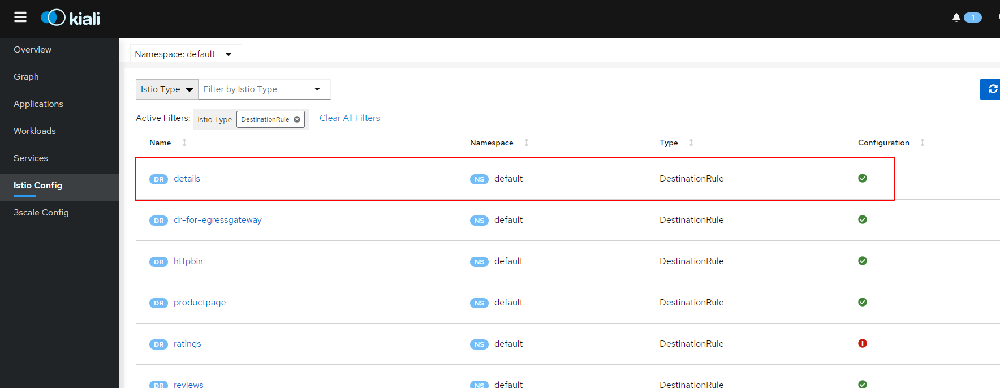

Kiali组件，使用基于 Web 的图形用户界面来查看网格和 Istio 配置对象的服务图。 使用 Kiali Public API 返回的 JSON 数据生成图形数据。
Kiali拥有如下的功能

Kiali的架构如下

istio中的组件web界面命令行打开方式
1 | treafik]# istioctl dashboard |
进入web界面，我们可以在Application中查看应用情况

可以到Graph中查看对应服务的调用拓扑图

可以在service中查看对应的service情况和所配置的VirtualService和DestinationRule

我们还可以在service中查看对应服务的访问情况


我们还可以对istio的配置进行检查，我们在istio config页面对istio的配置进行检查修改，查看到有红色感叹号的说明配置异常，点击进去看

我们按照提示修改后然后保存重新加载即可


这里修改后，这个DestinationRule显示正常
删除kiali的方式，可以执行如下命令
1 | kubectl delete all,secrets,sa,configmaps,deployments,ingresses,clusterroles,clusterrolebindings,customresourcedefinitions --selector=app=kiali -n istio-system |

欢迎访问 Vashon 的博客，博客和文章在完善中，请大家耐心等待。 若有问题或者有好的建议欢迎留言，笔者看到之后会及时回复。